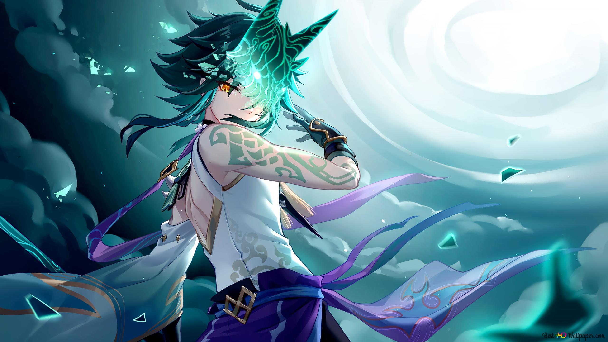

<HTML>
<HEAD>
<TITLE>Учебный файл HTML</TITLE>
</HEAD>


<html>
 <head>
 	<title>Фоновое изображение с помощью HTML</title>
 </head>
 <body bgcolor="#000" background="таланты.png">
 </body>
</html>


<BODY BGCOLOR="#FFFFCC" TEXT="#330066">
<P ALIGN="CENTER">
<FONT COLOR="#008080" SIZE="7">
<SPAN STYLE="BACKGROUND-COLOR:Aqua"><B> Персонаж Сяо</B></FONT><BR></SPAN>
<SPAN STYLE="BACKGROUND-COLOR:lightgreen"><FONT SIZE="6"><I> Немного о персонаже </I></FONT></SPAN>
<BR><BR>




<!DOCTYPE html PUBLIC "-//W3C//DTD XHTML 1.0 Strict//EN" 
  "http://www.w3.org/TR/xhtml1/DTD/xhtml1-strict.dtd">
<html xmlns="http://www.w3.org/1999/xhtml">
 <head>
  <meta http-equiv="Content-Type" content="text/html; charset=utf-8" />
  <title>Поля</title>
  <style type="text/css">
   .space { 
    padding: 20px; /* Поля */
    background: #AFEEEE; /* Цвет фона */
    border: 2px solid #E81E25; /* Параметры рамки */
   }
  </style>
 </head>
 <body>
  <div class="space">


<div class="card">
		<h1 class="mb-3">«Я буду защищать тебя. Но не приближайся и не становись у меня на пути, иначе ты об этом пожалеешь.»</h1>
		
<font size="4"><p>
	 Сяо — играбельный Анемо персонаж в Genshin Impact.
</p>
<p>
         Он адепт и единственный из пяти сильнейших защитников якса, оставшийся в живых. 
</p>
<p>
	  В настоящее время он проживает на постоялом дворе «Ваншу», продолжая исполнять контракт и изолируя себя от общения со смертными.
</p>
<p>
	 Сяо был доступен как играбельный персонаж во время второго закрытого бета-теста. Его официальный релиз состоялся в обновлении 1.3..
</p>
<p>
	 Сяо может использовать элементальный навык, чтобы быстро перемещаться по полю боя и наносить Анемо урон стоящим на пути врагам. Этот навык можно применить в воздухе.

Когда Сяо использует взрыв стихии, он надевает маску Завоевателя зла. В это время его прыжок увеличивается, а его обычные атаки, заряженные атаки и атаки в падении начинают наносить Анемо урон.

Тем не менее в это время он непрерывно теряет HP, и этот статус снимается в момент, когда Сяо покидает поле боя.
</p>	</div>
  </div>
 </body>
</html>

<BR><BR>


<SPAN STYLE="BACKGROUND-COLOR:lightgreen"><B> Ссылки:<B><BR></SPAN>
</P>
<TABLE WIDTH=60%>
<TR><TD><A HREF="01.HTML"><SPAN STYLE="BACKGROUND-COLOR:Aqua">Сильные и слабые стороны персонажа Сяо</A></TD>
<TR><TD><A HREF="001.HTML"><SPAN STYLE="BACKGROUND-COLOR:Aqua">Таланты и навыки персонажа Сяо</TD>
<TR><TD><A HREF="0001.HTML"><SPAN STYLE="BACKGROUND-COLOR:Aqua">Созвездия персонажа Сяо</TD>
<TABLE>
</BODY>
</HTML>
<BR><BR>


<input type="button" onclick="history.back();" value="Назад"/>